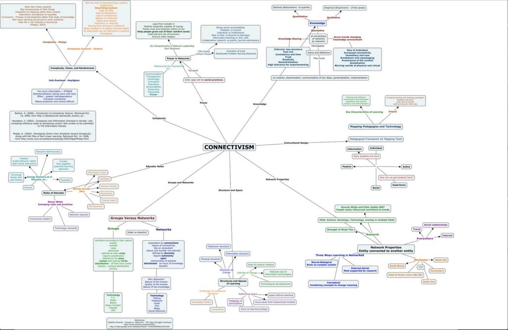

2.6 Conectivismo
2.6.1 O que é conectivismo?
Outra posição epistemológica, o conectivismo, surgiu em anos recentes e é particularmente relevante para uma sociedade digital. O conectivismo ainda está sendo refinado e desenvolvido, e atualmente é altamente controverso, com muitos críticos.
No conectivismo, são as conexões coletivas entre todos os “nós” de uma rede que resultam em novas formas de conhecimento. Segundo Siemens (2005), o conhecimento é criado além do nível dos participantes humanos individuais e está constantemente mudando e se transformando. O conhecimento em redes não é controlado ou criado por nenhuma organização formal, embora as organizações possam e devam se “conectar” a esse mundo de fluxo constante de informações e extrair significado dele. O conhecimento no conectivismo é um fenômeno caótico e mutável à medida que os nós vêm e vão e a informação flui através de redes que, por sua vez, estão interconectadas com inúmeras outras redes.
A importância do conectivismo reside no fato de que seus defensores argumentam que a internet altera a natureza essencial do conhecimento. “O canal é mais importante do que o conteúdo dentro do canal”, para citar Siemens novamente. Downes (2007) faz uma distinção clara entre construtivismo e conectivismo:
No conectivismo, uma frase como “construir significado” não faz sentido. As conexões formam-se naturalmente, através de um processo de associação, e não são “construídas” através de algum tipo de ação intencional. ...Portanto, no conectivismo, não há um conceito real de transferir conhecimento, produzir conhecimento ou construir conhecimento. Em vez disso, as atividades que realizamos ao praticar para aprender assemelham-se mais a crescer ou nos desenvolvermos a nós mesmos e à nossa sociedade em certas direções (conectadas).


2.6.2 Conectivismo e aprendizagem
Para Siemens (2005), são as conexões e a forma como a informação flui que fazem com que o conhecimento exista além do indivíduo. A aprendizagem torna-se a capacidade de acessar fluxos significativos de informação e de seguir aqueles que são relevantes. Ele argumenta que:
O conectivismo apresenta um modelo de aprendizagem que reconhece as mudanças tectônicas na sociedade onde a aprendizagem não é mais uma atividade interna e individualista... A aprendizagem (definida como conhecimento aplicável) pode residir fora de nós mesmos (dentro de uma organização ou banco de dados).
Siemens (2005) identifica os princípios do conectivismo da seguinte forma:
- A aprendizagem e o conhecimento residem na diversidade de opiniões.
- A aprendizagem é um processo de conectar nós especializados ou fontes de informação.
- A aprendizagem pode residir em dispositivos não humanos.
- A capacidade de saber mais é mais crítica do que aquilo que se sabe atualmente.
- Nutrir e manter conexões é necessário para facilitar a aprendizagem contínua.
- A capacidade de ver conexões entre áreas, ideias e conceitos é uma habilidade essencial.
- A atualização (conhecimento preciso e atualizado) é a intenção de todas as atividades de aprendizagem conectivistas.
- A tomada de decisões é, em si, um processo de aprendizagem. Escolher o que aprender e o significado das informações recebidas é visto sob a ótica de uma realidade em mutação. Embora exista uma resposta correta agora, ela pode estar errada amanhã devido a alterações no clima de informações que afetam a decisão.
Downes (2007) afirma que:
no seu cerne, o conectivismo é a tese de que o conhecimento está distribuído por uma rede de conexões e, portanto, que a aprendizagem consiste na capacidade de construir e percorrer essas redes... [O conectivismo] implica uma pedagogia que:
(a) busca descrever redes 'bem-sucedidas' (identificadas por suas propriedades, que caracterizei como diversidade, autonomia, abertura e conectividade) e
(b) busca descrever as práticas que levam a tais redes, tanto no indivíduo quanto na sociedade – que caracterizei como modelagem e demonstração (por parte do professor) – e prática e reflexão (por parte do aprendiz).
2.6.3 Aplicações do conectivismo ao ensino e à aprendizagem
Siemens, Downes e Cormier construíram o primeiro curso on-line aberto e massivo (MOOC), Connectivism and Connective Knowledge 2011, em parte para explicar e em parte para modelar uma abordagem conectivista da aprendizagem.
Conectivistas como Siemens e Downes tendem a ser um pouco vagos sobre o papel dos professores ou instrutores, pois o foco do conectivismo está mais nos participantes individuais, nas redes, no fluxo de informações e nas novas formas de conhecimento resultantes. O principal objetivo de um professor parece ser fornecer o ambiente e o contexto de aprendizagem inicial que reúne os aprendizes, e ajudá-los a construir seus próprios ambientes pessoais de aprendizagem que lhes permitam conectar-se a redes 'bem-sucedidas', com a premissa de que a aprendizagem ocorrerá automaticamente como resultado, através da exposição ao fluxo de informações e da reflexão autônoma do indivíduo sobre seu significado. Não há necessidade de instituições formais para apoiar esse tipo de aprendizagem, especialmente porque essa aprendizagem frequentemente depende fortemente de mídias sociais prontamente disponíveis para todos os participantes.
Existem inúmeras críticas à abordagem conectivista do ensino e da aprendizagem (ver Capítulo 5, Seção 4). Algumas dessas críticas podem ser superadas à medida que a prática melhora, à medida que novas ferramentas de avaliação e de organização do trabalho cooperativo e colaborativo com números massivos de pessoas são desenvolvidas, e à medida que se ganha mais experiência. O mais importante é que o conectivismo é realmente a primeira tentativa teórica de reexaminar radicalmente as implicações da internet e da explosão de novas tecnologias de comunicação para a aprendizagem.
Referências e leituras adicionais
AlDahdouh, A., et al. (2015) Understanding knowledge network, learning and connectivism, International Journal of Instructional Technology and Distance Learning, Vol. 12, No.10
Downes, S. (2007) What connectivism is Half An Hour, 3 de fevereiro
Downes, S. (2014) The MOOC of One, Stephen’s Web, 10 de março
Siemens, G. (2005) Connectivism: a theory for the digital age International Journal of Instructional Technology and Distance Learning, Vol. 2, No. 1.
Atividade 2.6 Definindo os limites do conectivismo
1. Quais áreas do conhecimento você acha que seriam melhor 'ensinadas' ou aprendidas por meio de uma abordagem conectivista?
2. Quais áreas do conhecimento você acha que NÃO seriam adequadamente ensinadas por meio de uma abordagem conectivista?
3. Quais são seus motivos?
Você pode querer voltar à sua resposta depois de ler o Capítulo 6 sobre MOOCs. Caso contrário, esta atividade não possui feedback.